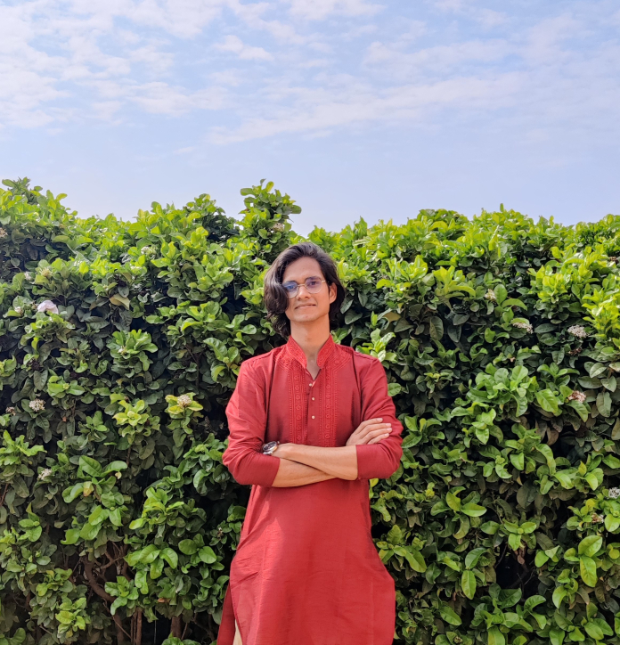

Hello! I’m a Software Engineer working with Python and AWS to build scalable, reliable, and serverless systems.
My experience spans across a wide range of AWS services including
CloudFormation, Lambda, Step Functions, DynamoDB,
SQS, EventBridge, MediaConnect, and others. I focus on designing automation workflows, cloud orchestration, and event-driven architectures that keep systems resilient and observable.
I enjoy problem-solving, writing clean and maintainable code, and continuously learning new cloud-native patterns.
Also, if you want to find me on any platform search for: ubaida985
Over the past few years, I’ve focused on building cloud-native applications and
serverless architectures using AWS, Python, and Rust. I design orchestration workflows, event-driven systems, and infrastructure automation with services like CloudFormation, Lambda, Step Functions, DynamoDB, SQS, EventBridge,
and MediaConnect.
I also have experience with TypeScript, REST APIs, CI/CD pipelines, and observability (logging, tracing, monitoring) using tools such as OpenTelemetry and Honeycomb.
Earlier in my journey, I worked on Java, web development, and Android, and while those skills are not my main focus today, they shaped my foundation as a developer.
Beyond tech, I enjoy cooking, swimming, and dance — hobbies that keep me creative and balanced.
Leading the design of cloud-native orchestration systems, focusing on building self-healing architectures and automated recovery workflows for high-scale delivery pipelines. Overcame cloud provider service limits by architecting a resource sharding system, enabling the platform to scale beyond previous bottlenecks while maintaining strict event-driven performance. Standardized system observability across core services using OpenTelemetry and Honeycomb, creating custom triggers and dashboards that slashed incident response times. Driving engineering quality across teams by leading complex code reviews and standardizing CI/CD pipelines, ensuring secure and reliable deployments across multiple environments. Solved critical distributed system race conditions and deployment bugs, improving overall system stability and ensuring 99.9% SLA adherence for global customers.
Led development of the OTT Delivery Orchestration Remediation Service, enabling automated health monitoring, self-healing, and intelligent recovery for live OTT video workflows. Developed and maintained the Dynamic Audio Mixing feature, automatically upmixing/downmixing based on input/output requirements, improving audio flexibility and operator efficiency. Architected and implemented AWS Step Functions workflows for Lambda, EC2, and DynamoDB orchestration, automating deployment, monitoring, and remediation actions. Designed and led AMI build with Packer and GitHub Actions, including testing and validation for OTT delivery stacks. Provided on-call production support via PagerDuty, diagnosing AWS and system-level issues, implementing hotfix scripts, and reducing manual intervention during incidents.
Developed redundancy and playout failover mechanisms, achieving 99.9% SLA adherence across deployments. Led multiple feature developments and provided cross-feature support, ensuring timely delivery and implementation quality. Resolved complex corner cases in the blue-green deployment system, improving rollback reliability and reducing failed releases by 100%. Developed reusable automation testing libraries using Pytest and Selenium, reducing test code redundancy and accelerating end-to-end test development for multiple services.
Optimized serverless workflows to significantly reduce system latency and operational overhead. Improved deployment pipelines by resolving race conditions and implementing more resilient automation patterns.
Developed a full-stack Android application platform to enable Bots in Red Tech to provide affordable healthcare products to customers across India.
Mentored and chaired a team of 3 to develop a full-stack Android application to enable TrulyIAS to provide guidance to students across India.
Wrote efficient Java code to contribute to the data-set of codes present across the website.
Developed a website using HTML, SASS, JavaScript, and Bootstrap along with other utilities like FormSubmit, owlCarousel, and Jquery to let people discover their services, sign up, or start a career in logistics.
Completed Bachelors of Engineering in Computer Science Engineering. Graduated with a CGPA of 8.2/10.
City Montessori School (CISCE), Chowk, Lucknow. Opted for science stream in high school and PCM with computers in secondary school. Achieved 92% and 95% respectively.
Contributed to 'Counsello' (AI-based counselor), creating the frontend using HTML, CSS, and JavaScript libraries.
Contributed to various open source projects and successfully merged four pull requests.
Long before I was architecting orchestration systems at Evertz, I was a student driven by a passion for building. My journey started with experimentation—from Java-based desktop apps to my first Android messengers and full-stack web templates. While my focus has since shifted to large-scale cloud-native backend engineering, these early projects represent the foundation of my engineering mindset and my lifelong habit of building from scratch.
I am currently working in a hybrid setup from Gurgaon, but I usually stay in Lucknow, Uttar Pradesh. If you’d like to collaborate, discuss opportunities, or just connect, feel free to reach out to me.